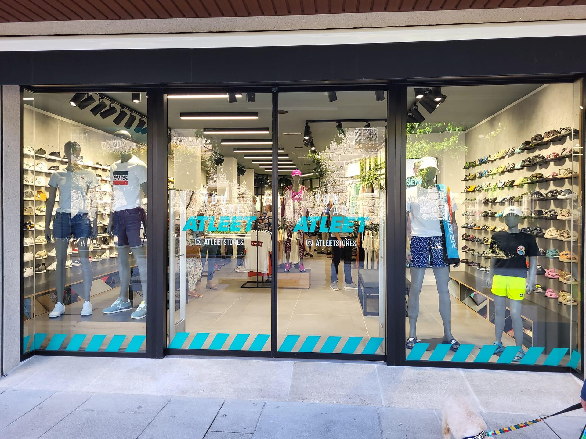

Productos Destacados-EJEMPLO1

Concepto Omni: Zonas de Prueba
Diseño de Interiores Estratégico: Se centra en la integración de camerinos amplios y espejos funcionales que simulan la luz natural, mejorando la experiencia de prueba del cliente. El layout promueve la compra cruzada al ubicar accesorios clave cerca de las áreas de prueba.